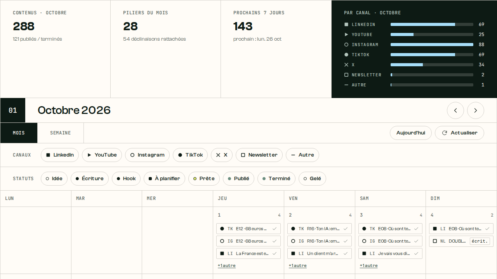

[ Paris Founders Club × Notion ]
Content on autopilot?
Build your AI content system in Notion, tonight.
[ tonight ]
You leave with a system, not with notes.
[ the truth ]
Most founders post when they find time. And it shows.
[ the real problem ]
You don’t lack ideas. You lose them.
[ hello ]
I’m Sylvain. I build Notion and AI systems for founders.
[ since september 2024 ]
732 posts published since September 2024.
[ linkedin ]
1.2 million impressions on LinkedIn in 2025 and 2026.
1,219,074 impressions on posts published jan 2025 to oct 2026 · 9,705 followers
[ youtube ]
631 subscribers and 14.7k views on YouTube since June.
[ newsletter ]
709 people get my newsletter.
60% average open rate
[ in public ]
And I started Instagram from zero, in June.
53 posts · 17,719 views · 113 followers
[ the secret ]
It’s not discipline. It’s a system.
[ the system ]
One idea. Four formats. One place.
- linkedin post
- carousel
- newsletter
- short video
[ under the hood ]
This is mine.

[ 01 · idea bank ]
Catch every idea before it disappears.
[ 02 · brand voice ]
Tell the AI who you are once.
[ 03 · the agent ]
One idea in. Four drafts out.
[ 04 · calendar ]
Then you decide when it goes out.
[ live ]
Watch: one idea, four formats, in under two minutes.
[ two ways ]
Notion Agent works inside Notion. Claude works next to you.
[ the rule ]
The AI drafts. You decide.
[ your turn ]
Let’s build yours.
after publish
[ step 1 · 2 min ]
Duplicate the template.
[ step 2 · 5 min ]
Fill your brand voice. Short and true beats long and vague.
[ step 3 · 5 min ]
Drop your 3 ideas in the idea bank.
[ step 4 · 10 min ]
Create your agent and paste the prompt.
[ step 5 · 10 min ]
Run it on one idea. Edit. Put it in the calendar.
[ build time ]
Raise your hand anytime.
click or enter to start · again to pause
[ before friday ]
Post one of tonight’s drafts before Friday.
[ keep going ]
Keep the template. Get the next ideas in my newsletter.
after publish
[ q&a ]
Your questions.
[ thank you ]
Thank you, Paris Founders Club.
Sylvain Ramaradjou · Rama Logic · ramalogic.com